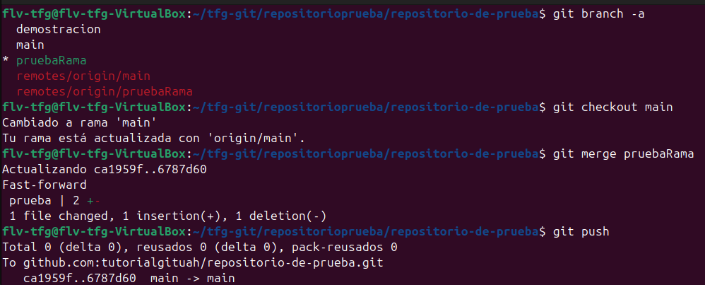
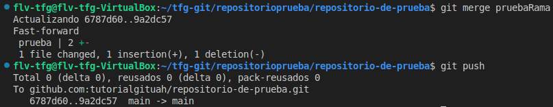

git mergeSe utiliza para fusionar cambios de una rama a otra. Combina el historial de commits de dos ramas, integrando los cambios realizados en una rama dentro de otra rama.

git branch -a (la que tiene el asterisco es la rama sobre la cual ejecutamos los comandos)
Luego cambia a la rama destino (por ejemplomain) con git checkout main
Una vez en la rama destino, ejecuta el merge:git merge Rama (Rama sería la rama que queremos fusionar con la seleccionada con "checkout")
Git realizará la fusión automáticamente (Fast-forward) e integrará los cambios. Finalmente, sube los cambios al repositorio remoto congit push
y confirma que la fusión se ha completado correctamente.Para ver las ramas que ya han sido fusionadas:
git branch --merged
Para ver las ramas que aún no han sido fusionadas:git branch --no-merged
Para abortar una fusión en caso de conflicto:git merge --abort

En la ventana de control de git dentro de vscode, puedes fusionar ramas cambiando a la rama destino y luego abriendo la terminal integrada para ejecutar el comando git merge. Si hay conflictos, vscode te los mostrará de forma visual permitiéndote resolverlos fácilmente.